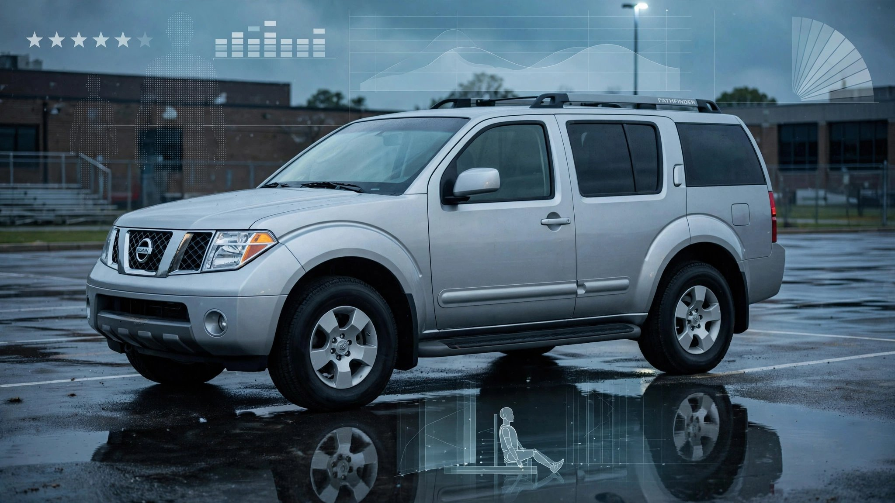

The Pathfinder Was Just Named “Best Vehicle for Teens.” It Kills at 3× the Pilot’s Rate.

IIHS and Consumer Reports just named the 2026 Nissan Pathfinder one of the “Best New Vehicles for Teens.” Top Safety Pick+. Five NHTSA stars. A base price under $40,000. Parents are supposed to feel good about this.
FARS says the Pathfinder nameplate has 712 deaths and a fatality rate of 0.93 per 100 million miles driven. Its direct competitor, the Honda Pilot, sits in the same dealership row and the same school parking lot with a rate of 0.29.
Over the 2014–2023 FARS window, the Pathfinder generated 712 fatalities from 1,428 fatal crashes across an estimated fleet of 612,500 vehicles. Honda’s Pilot managed 514 deaths at roughly the same fleet size. Toyota’s Highlander, the other obvious three-row competitor, came in at 0.42. Even the Dodge Durango, which nobody calls safe, scored 0.54. Only the Ford Explorer, with its own well-documented problems at 1.54, kills at a higher rate in this segment.[1]
Impairment does not explain the gap. Pathfinder drivers tested positive for alcohol or drugs in 19.1% of fatal crashes. Pilot drivers: 19.4%. Highlander: 16.4%. Sober people are dying at a higher rate in this vehicle. It is producing worse outcomes with the same caliber of driver.
Generational data tells the story. Body-on-frame R50 models (1996–2004 model years) account for 281 deaths in the FARS window. R51 models (2005–2012), also body-on-frame, add 186. Then Nissan switched to a unibody platform and a continuously variable transmission for the R52 generation in 2013. That CVT became one of the most complained-about transmissions in NHTSA history.[2]
Nissan’s 2013 Pathfinder alone has over 870 NHTSA complaints, many describing sudden loss of acceleration on highways. Owners reported the vehicle shuddering so violently at 60 mph that they feared leaving their lane. A class-action lawsuit alleges the 2019–2021 CVT renders the vehicles “unreliable and unreasonably dangerous to operate.”[3] Earlier R51 models (2005–2010) had their own defect: coolant leaking into transmission fluid, causing failures in traffic. NHTSA denied a petition to investigate, and Nissan quietly extended the warranty to 10 years.[4]
R52 model years (2013–2020) account for 146 of the 712 deaths. Genuinely lower than older generations. But 146 deaths in a vehicle marketed to families with a known transmission defect, no formal NHTSA investigation opened, and a class-action still pending is not a success story.
Here is where the counterargument earns its airing: the 2026 Pathfinder is a different vehicle. Its R53 platform debuted for 2022. Nissan ditched the CVT for a conventional 9-speed automatic. Engineers redesigned the structure. IIHS tested what is on the lot today, not what is rusting in driveways. That distinction is real, and parents buying a new 2026 model are getting a measurably better-engineered product.
But IIHS is recommending a nameplate, and nameplates carry history. A 16-year-old getting a Pathfinder for their first car is not getting a 2026. They are getting a 2017 or a 2019 that their parents found for $18,000, one with a CVT that may have already been replaced once and might judder on its next highway merge. By endorsing the name, IIHS implicitly endorses the brand experience. When a parent sees “Pathfinder” on the safe list, they do not mentally subdivide by generation.
Honda’s Pilot does not have this problem. Its rate has declined steadily across generations: Gen1 (2003–2008) accumulated 315 deaths, Gen2 (2009–2015) dropped to 120, Gen3 (2016–2022) fell to 79. No class-action CVT lawsuits. No coolant-in-the-transmission defects. No generation that collapses on you at highway speed.
If you are shopping the three-row segment for a teen driver: the Pilot and Highlander have earned their reputations with body counts, not just crash-test dummies. The 2026 Pathfinder may well deserve its award. The nine model years of Pathfinders your teen will actually afford do not.
Sources & References
- NHTSA, Fatality Analysis Reporting System (FARS), 2014–2023. nhtsa.gov
- NHTSA complaints database, 2013 Nissan Pathfinder. nhtsa.gov
- ClassAction.org, “Nissan Hit with Class Action Over Alleged Transmission Defect Plaguing 2019-2021 Pathfinder, Infiniti QX60.” classaction.org
- Manufacturing.net, “Feds Deny Petition Seeking Probe Of Nissan Transmissions.” manufacturing.net
- IIHS, “Best Vehicles for Teens” 2026 list. iihs.org
- IIHS, “Two additional models earn awards in latest IIHS ratings.” iihs.org
Source: NHTSA FARS 2014–2023. Fatality rates are per 100 million estimated VMT using NHTS-derived mileage assumptions. Fleet estimates carry ±15% uncertainty for mid-volume models. The 2022+ R53 Pathfinder has minimal exposure in this data window. See methodology for caveats.